机器人客服
企业需要快速回复客服问题，当前市场上，存在很多厂商能提供全渠道智能客服系统，相对来说，渠道对接已经非常成熟，集成起来容易。但是在机器人客服上，用户体验参差不齐。在 Chatopera，我们主要关注智能机器人，追求最好的机器人客服体验：快速实现符合业务需求的聊天机器人，效果稳定。
| 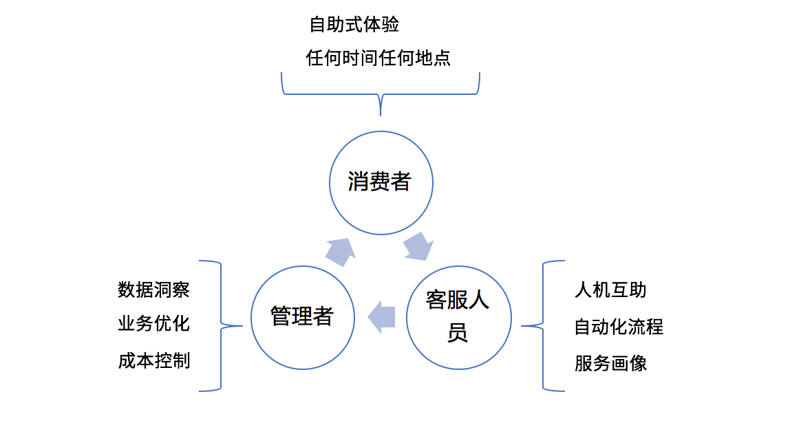 |
在 Chatopera，客服机器人将加入到聊天室中，它有两种参与客户服务的方式：
辅助客服人员
接管聊天室，直接和消费者沟通
 |
具体地说，在排队阶段，引导消费者问问题，借助智能问答引擎服务，进行意图识别，如果意图匹配到了智能问答引擎中的多轮对话，就启动多轮对话，完成服务；未匹配到多轮对话则继续排队，在客服人员接入会话时，机器人客服针对消费者的问题，给客服人员建议回复。
针对不同企业客户的需求，机器人客服的服务方式也可以调整，最主要的是，机器人客服可以利用多轮对话和知识库，提高用户满意度，提高效率，人工坐席专注于更加棘手的问题。
创建网站渠道
以管理员身份春松客服坐席工作台，导航【系统-客服接入-网站列表-创建新网站】，按照如下内容设置网站渠道。
| 项目 | 值 | 描述 |
|---|---|---|
| 网站名称 | localhost | 任意字符串 |
| 网站地址 | localhost | 网站的域名或 IP |
| 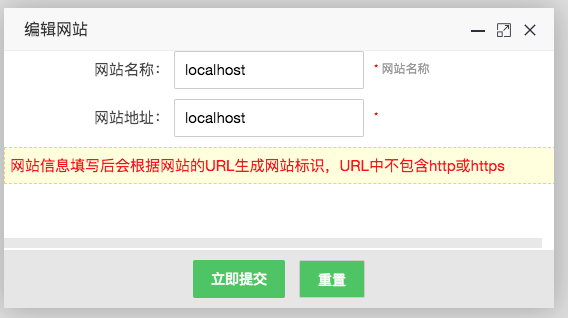 |
点击【立即提交】保存。
创建聊天机器人
登录Chatopera 机器人平台，注册并在【控制台】中创建聊天机器人。
| 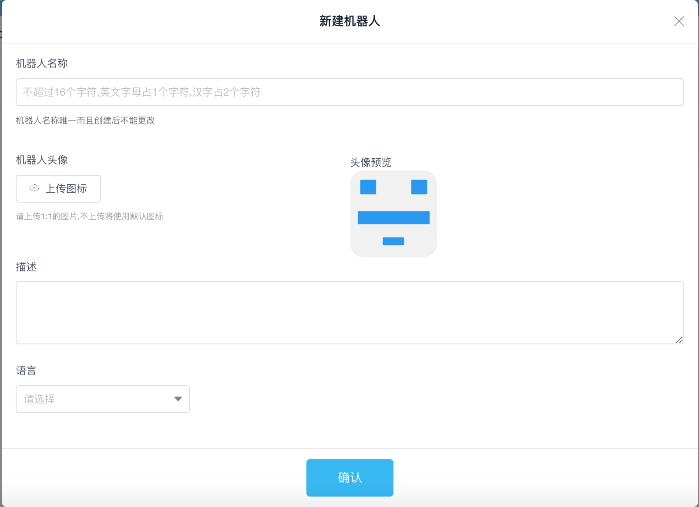 |
| 项目 | 值 | 描述 |
|---|---|---|
| 机器人名称 | 小 C | 机器人的名字，创建后不能变更 |
| 描述 | 机器人客服 | 机器人的描述 |
| 语言 | zh_CN | 机器人的语言为中文 |
机器人具有多轮对话和知识库两个管理对话能力的组件，在创建好机器人后，创建一个问答对作为测试示例。点击【知识库】图标，点击【新建问题】。
 |
| 项目 | 值 | 描述 |
|---|---|---|
| 问题 | 缴费年期变更后，佣金如何计算？ | 问题的文本 |
| 答案 | 变更后仍有佣金的，按照变更后的年期对应的提佣率计算佣金。 | 问题的答案 |
点击【确定】。
集成机器人的方式是通过 SDK 创建机器人实例，使用机器人接口进行对话和查询等。机器人实例的认证和授权是通过ClientId和Secret完成，点击【设置】查看ClientId和Secret。
| 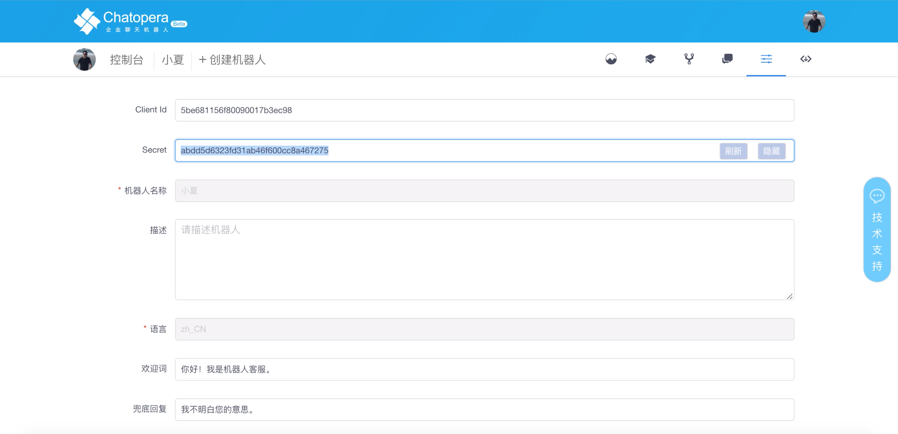 |
集成机器人客服
以管理员身份春松客服坐席工作台，导航【智能机器人-新建机器人】，按照如下内容填入创建表单。
| 项目 | 值 | 描述 |
|---|---|---|
| 网站渠道 | localhost | 根据网站地址选择网站渠道 |
| ClientId | xxx | Chatopera 机器人平台机器人 ClientId |
| Secret | xxx | Chatopera 机器人平台机器人 Secret |
| 工作模式 | 机器人客服优先 | 目前支持【机器人客服优先】或【人工客服优先】两种类型 |
| 描述 | 机器人客服 | 对机器人的简要介绍 |
| 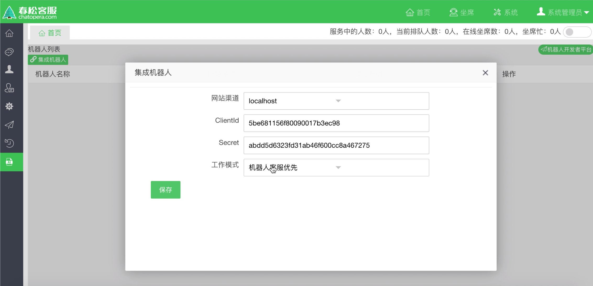 |
点击【保存】创建机器人，返回机器人列表页面，可以找到刚刚创建的机器人客服，创建后，默认状态，机器人是不开启的，在列表页通过【是否开启】设置该机器人为开启，如下图所示。
 |
测试机器人客服
提示：春松客服访客测试端地址
http[s]://春松客服IP[:PORT]/testclient.html
使用浏览器打开春松客服访客测试端，并点击【在线客服】。在知识库设置好后，当访客在客户端问问题，匹配了知识库的问题后，机器人就自动回复。
比如输入：缴费年期变更后，佣金如何计算？，能得到在知识库中设置的答案。
| 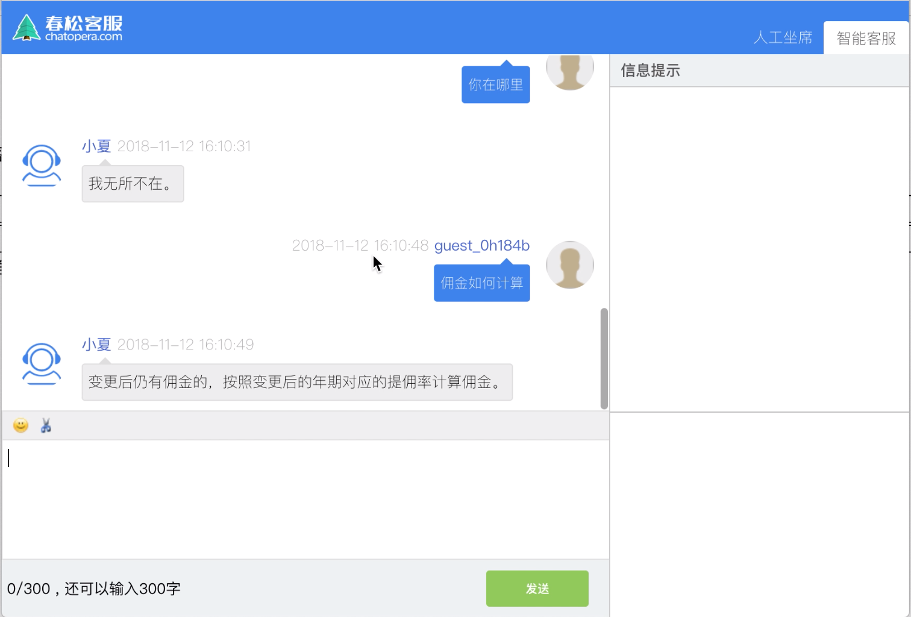 |
如果想使机器人变得更加智能，需要参考关于Chatopera 机器人平台的更多介绍。
问候语
在默认情况下，机器人的问候语是在机器人平台的机器人属性页面进行设置，该设置只支持简单的文本。
 |
| 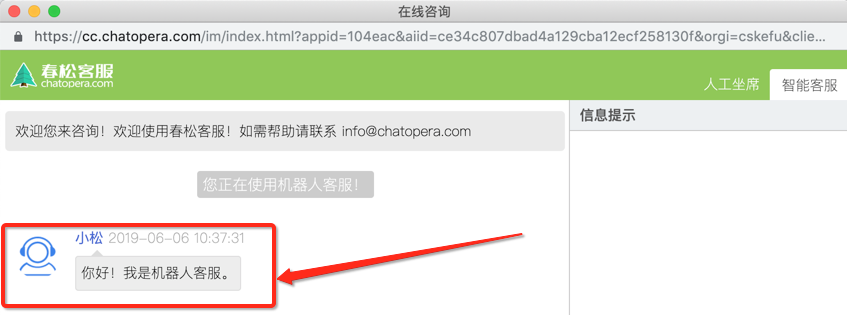 |
访客登录进入客服聊天窗口往往是有一些问题要咨询的，所以更为合理的用户体验是将一些常见问题作为导航用途显示在问候语下面，比如这样：
 |
在春松客服里，为了支持各种丰富的对话场景，这些功能都是使用多轮对话配置。接下来的介绍假设您已经学习了多轮对话设计器的内容，如果您还没有学习这部分内容，建议先完成，大约需要 30 分钟时间。
下面是支持在问候语中关联热门问题，进行导航的方法：
- 下载安装多轮对话设计器
 |
下载连接也可以通过多轮对话设计器使用教程获得。
- 新建聊天机器人
 |
- 新建对话技能
 |
此处，对话名称可以使用字母、数字和下划线组成的字符串填写。
- 粘贴技能脚本
在该机器人的技能列表中，点击刚刚创建的技能的“编辑”按钮，并在新打开的编辑窗口中，选择“脚本”，将下面的几行内容粘贴到编辑窗口中。
// FAQ Hotlist + __faq_hot_list - ^get_greetings()
点击【保存】，在编辑窗口中，如图。
| 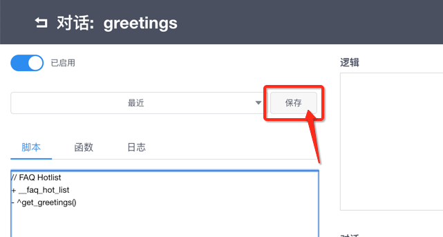 |
该规则__faq_hot_list将保证在访客和机器人连接成功后，
机器人发送函数get_greetings返回的内容。此处__faq_hot_list是固定的，get_greetings函数名和下面的技能函数名保持一致便可。
- 粘贴技能函数
// 问候语中关联常见问题
exports.get_greetings = async function() {
return {
text: "请问有什么可以帮到您？",
params: [{
label: "1. 产品列表",
type: "qlist",
text: "产品列表"
}, {
label: "2. 当季热销产品",
type: "qlist",
text: "当季热销产品"
}, {
label: "3. 退换货咨询",
type: "qlist",
text: "退换货咨询"
}]
};
}
点击【保存】，在编辑窗口中，如图。
| 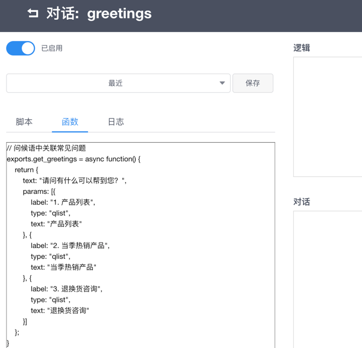 |
在函数中，可以自定义热门问题的文字，顺序。文字即访客看到的文本内容，通过label设定，当访客点击一个问题时，聊天机器人将收到 text设定的文本。您可以在知识库或多轮对话中，设置该文本的回复内容。
访客对于热门问题列表，可以点击多次。
- 导出聊天机器人
多轮对话设计器是企业聊天机器人的设计环境，机器人平台或智能问答引擎是机器人的运行时环境。
| 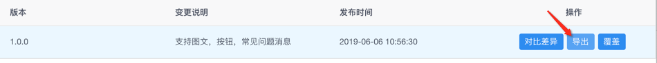 |
导出后，多轮对话设计将该机器人多轮对话保存为一个.c66 后缀的文件。
- 发布聊天机器人
登录机器人平台，在目标机器人的多轮对话管理面板中，导入对话应用(.c66)文件。
| 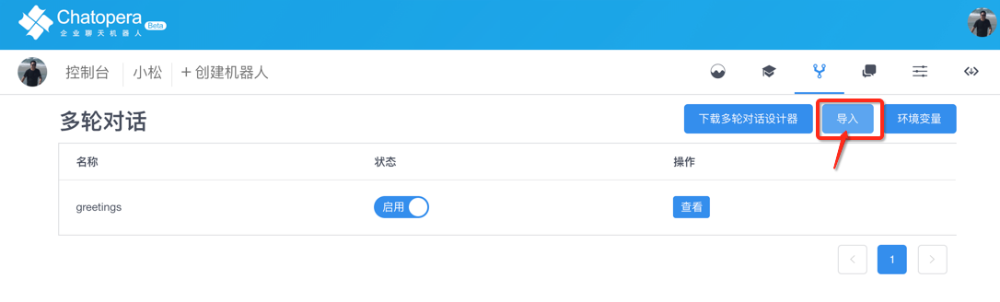 |
- 上线后使用
在导入成功后，在春松客服中，访客再次登录聊天窗口，就会收到带有热门问题的问候语。
按钮消息
另外一种情况是机器人客服回答一个选择列表，访客点选按钮进行选择。
| 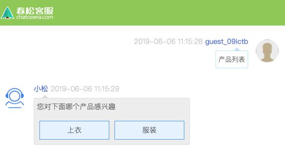 |
- 粘贴技能脚本
可以在上面步骤中建立的技能中，添加新的规则：
+ (*) 产品列表 (*) - ^get_products()
该规则将保证在访客的问题中有 产品列表时，发送函数get_products返回的内容。
- 粘贴技能函数
// 按钮选择消息
exports.get_products = async function() {
return {
text: "您对下面哪个产品感兴趣",
params: [{
label: "上衣",
type: "button",
text: "介绍一下上衣"
},
{
label: "服装",
type: "button",
text: "介绍一下鞋帽"
}
]
}
}
在脚本中，只需要设定params中的内容作为选型，其他保持默认。
图文消息
春松客服还支持的一类消息是图文消息，通过是分享一个链接，展示链接的图片和简介。
| 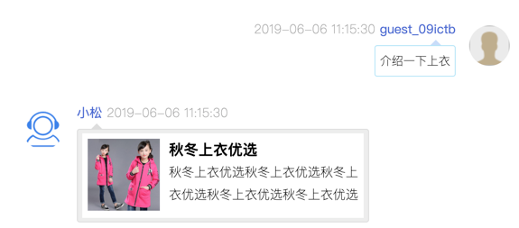 |
- 粘贴技能脚本
可以在上面步骤中建立的技能中，添加新的规则：
+ 介绍一下上衣 - ^get_shangyi()
该规则将保证在访客的问题中有 介绍一下上衣时，发送函数get_shangyi返回的内容。
- 粘贴技能函数
// 图文消息
exports.get_shangyi = async function() {
return {
text: "{CLEAR} 图文消息",
params: [{
type: 'card',
title: "秋冬上衣优选",
thumbnail: "https://ss0.bdstatic.com/70cFuHSh_Q1YnxGkpoWK1HF6hhy/it/u=277597165,2202071991&fm=15&gp=0.jpg",
summary: "秋冬上衣优选秋冬上衣优选秋冬上衣优选秋冬上衣优选秋冬上衣优选秋冬上衣优选秋冬上衣优选秋冬上衣优选",
hyperlink: "https://www.1688.com/huo/B6F9CDAFD7B0C5AEBAA2CDE2CCD7BCD3BAF1C9CFD2C2C7EFB6AC.html"
}]
}
}
其中，title代表大标题，thumbnail是图片，summary是简介，hyperlink是点击图文消息后，跳转的链接，这几项是用户可以自定义的，其它项就使用默认值，比如type的值必须是card。
文本消息、热门问题、按钮消息和图文消息是春松客服支持的在线机器人客服消息类型。在掌握了知识库、脚本语法和函数后，用户可以支持各种客服场景。
快速开始
在上面的介绍中，Chatopera 的多轮对话机器人通过c66文件进行分发，Chatopera
提供了在问候语中关联热门问题的多轮对话应用示例文件(小松.1.0.7.c66)，您可以点击下载链接获得这个应用。
该对话可以导入到多轮对话设计器中，进行浏览脚本和函数；也可以直接导入到机器人平台，然后在春松客服中进行体验。